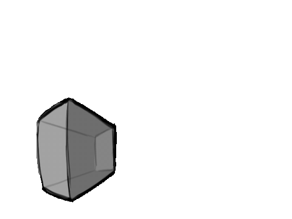
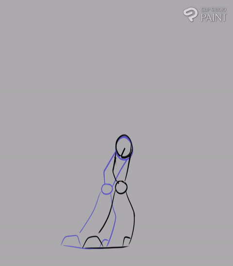
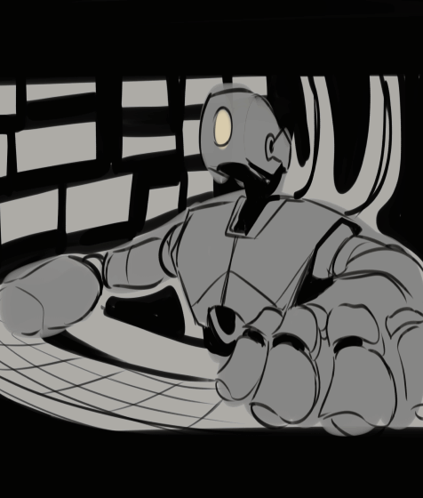
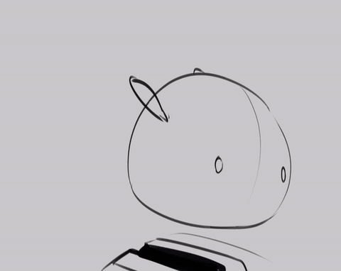
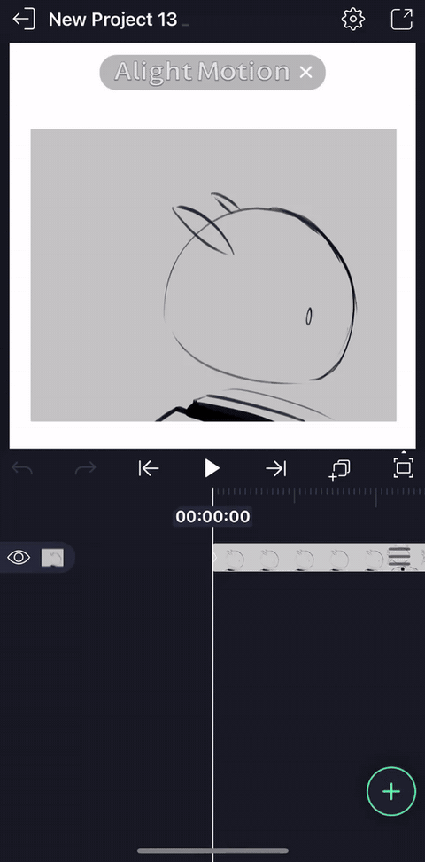
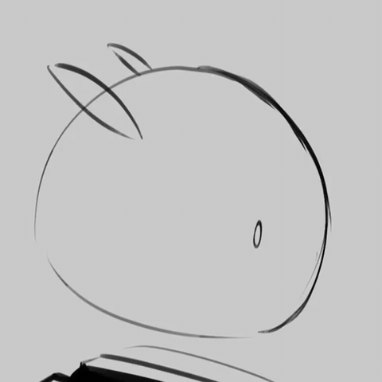
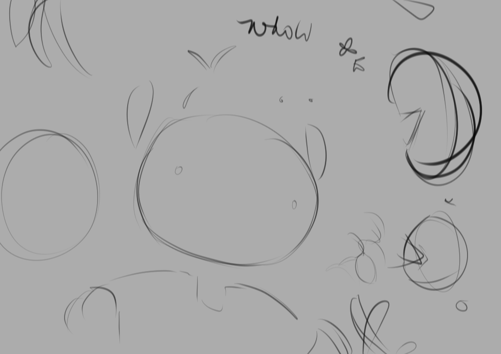
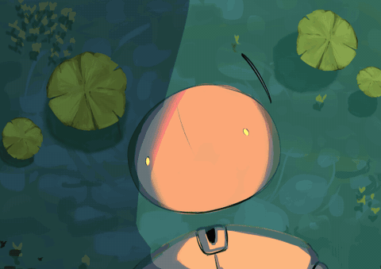
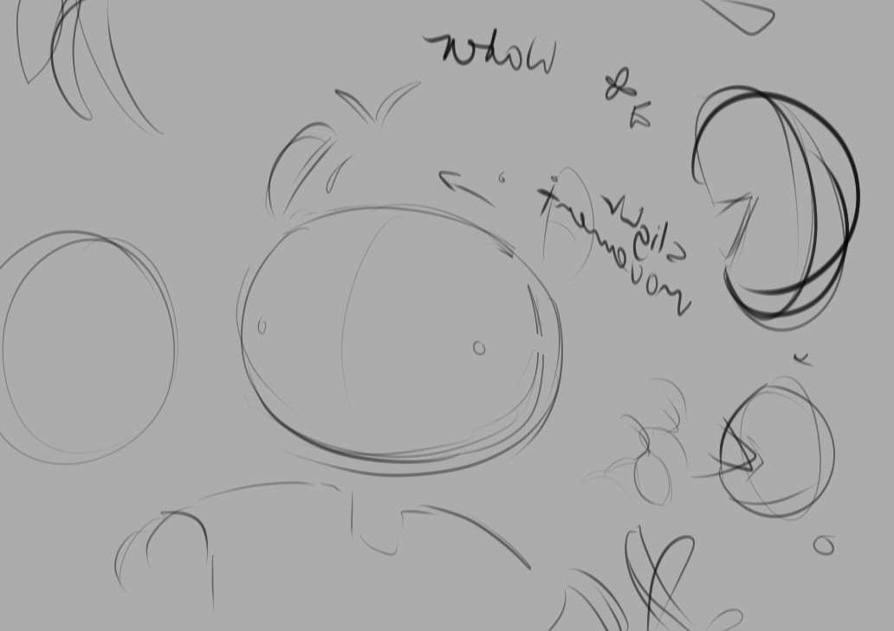
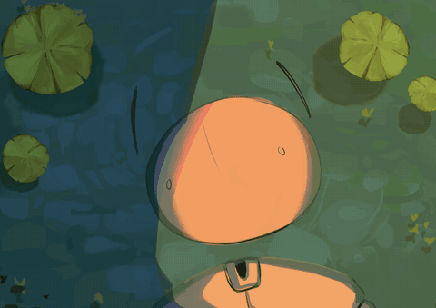

Animation Testing

By Me ^
Description: Concept art and Animation practice.
Intention: To be able to get a feel of the character and how I want them to move as well as get a feel for the style and how I want the scenes to look and get a feel for the movements of the character
Equipment: my drawing tablet, and most likely Clip Studios
Outcome: Some simple animation tests and at least 1 concept drawings for the character and background ideas.
INTENTION:
I Intend to do some simple animation practice, to get an idea on movement as well as make any adjustments to the character design if needed.
o What specific skill or technique do you want to test?
I want to practice some simple movement as well as some editing, using Clip studios Paint and adjusting to the animation mecanics.
o What has this experiment been influenced by? (refer to research portfolio)
Due to looking at multiple styles of animation, the main one being 2D animation with multiple different setting techniques (example using 2s or 3s depending on the detail or Spead of the movement. 2s and 3s refer to the amount of frames used before the next one. if you use 2s the it has two of the same frame before moving to the next) as well as principles. the main ones I had looked at being.
Anticipation.
Anticipation, builds up to the movement, giving you awareness of the movement that is about to occur.
Staging
Staging is an important key thing as it sets up the scene
aspects of Staging include: -Acting -Setting -Timing - Camera
slow in and slow out
Slow in and slow out to allow for smoother movements.
having a slow start that speeds up, then slows down at the final frames of the movement.
and appeal
Appeal is important as it makes the animation more eye-catching, as well as on occasion it can make the animation easier as they character can be structured into simple shapes.
these being 4 out of the 12 animation principles.
o What technical equipment and software will you use? If you are using a digital SLR, for example, you might comment on how you are going to use lenses and aperture to achieve a particular look. If you are using a microphone to capture dialogue or sound effects, you might comment on how you will configure it correctly when recording these sounds.
I used a Wacom 16 (my drawing tablet)
Clipstudios Paint EX for the animation and character design.
I also added some motion blur and simple camera editing towards the final animation clip using Alright Motion, on my Phone.
● CODES AND CONVENTIONS:
o What codes and conventions will be manipulated and experimented with?
Codes
Colour: is a very key aspect, I want to use a progression of colours to display the emotion of the scenes, a progression of dull to light. great examples of this can be found in the Colour section of Media Froms
Colour can be used to convey the emotions i want people to experience in specific scenes.
Sound: I want the visuals to speak volumes over the sound. I may have aspects of suspense when I get into the storyboarding. (depends on time constraints) My idea of sound, is I don't want it to overshadow the visuals, I want to show my message not tell it, so I don't want to use dilogy but i may use sound effects and light background noise as I don't want it to be completely silent.
Conventions
The way it is structured seems like a robot vs nature, coming to change, or nature fantasy Heros journey of sorts.
o How is this test relevant to your proposed product?
I will be working with 2D animation so doing simple animation practices will allow me to pick up any flaws in design, that I can adjust before I move forward with the storyboarding and Final.
● INFLUENCES:
the blurring done on the editing potion was inspired by the KitBull Gif
Was an inspiration when playing around with a bit of motion blur, i also looked at some blurring fade-ins and close-ups)
Many of my other inspirations can be found on my Media Forms page as it details many styles and animation technique

● INTENDED OUTCOME & PROCESS:
I want to construct multiple trials, that practice movement as well as allow me to find any changes that need to be made to the initial robot design. I'll do this by
practicing with the software animation settings, as well as different techniques and skills.
Process
Animation Test 1


INFLUENCES, INTENDED OUTCOME & PROCESS:
I used the animation function on Clip studio paint
Due to my original design I wanted to play around with the box shape of the head, so I did a messy rectangle loop, to get a more 3D movement of the original head shape.
on the left I have a sped-up version of me drawing out the animation and on the right I have the finished animation.
Animation Test 2


INFLUENCES, INTENDED OUTCOME & PROCESS:
Due to the shape of the character I wanted to animate a quick scene that I had drawn out. Due to this, it allowed me to notice difficulties in the head movement in particular. The ability to move the head was possible but took me a lot longer, it concerned me as I would be under strict time constraints with my Final.
I prefer this design but when taking into account the amount of time it took for the head movement alone since most shots of the character would be medium to close shots and include the head more than the entire body, forcing me to reconsider the original design, this causing me to change the head shape from a square to a circle as is allowed for more fluid motion.
on the left I have a sped-up version of me drawing out the animation and on the right I have the finished animation.
Animation Test 3


INFLUENCES, INTENDED OUTCOME & PROCESS:
This was me testing out a more rounded head shape of the new design.
the shape was much easier to work with and gives me more confidence to be able to stay within the time constraints.
on the left I have a sped-up version of me drawing out the animation and on the right I have the finished animation.

Editing
After adding some motion blur and simple camera editing using Alright Motion. Due to not having a membership, I had to crop the video
after doing some simple movement (panning)
it adds for more movement and life in the clip, which is something I personally love.

Due to some constraints and the redesign of the character brought on by ANIMATION 2, so I had to get a quick sample trial done specifically of the head-to determine how I want the head to move and to contrast it between ANIMATION 2, which seemed more messy and was a lot more time consuming.
Animation Test 4





INFLUENCES, INTENDED OUTCOME & PROCESS:
Steps-
storyboarded the main motions
Constructed the main animation
Developed the background
coloured the character
added additional motions (movement of water and Lilypads)
After drawing out some storyboards (found in the Storyboards section of pre-production)
I played around with the design and movement, as well as pixel rate and size.
I have found that I need to increase my pixel size as these came out quite blocky and cubed. I do enjoy the messier coloring of the characters, (inspired by Fulled and Tmnt mutant mayhem) but I need to remember to better layer things like the antenna as they did not move how I intended and appeared stiffer.
My takeaway was to increase pixel size, better layer the different elements, and allow more bounce and flow with the background as the background needs to better interact with the environment.
I have found areas to change and improve before producing the final piece and was glad to get a visual on my first attempt at some part of the final product.
OUTCOME, REFLECTION & EVALUATION
Through the process of attempting Animation trials, I was able to discover difficulties with time and the robot's original design, but I did ultimately complete my goal of practicing some basic simple animations to determine any changes that need to be made.
I used Clip Studio Paint and Alright Motion (for editing)
I changed my character design after ANIMATION TEST 2 for the main reason of time efficiency due to time restraints as the new design was a lot smoother to use.
I believe that these trials were important as it allowed me to make large alterations mostly to my robot's shape/head.
MEDIA requirements
DELETE THIS BEFORE YOU SUBMIT YOUR GOOGLE SITE
1. INTENTION (Must be written before you test any ideas):
● INTENTION:
o A written explanation of the intended experiment
o What specific skill or technique do you want to test?
o What has this experiment been influenced by? (refer to research portfolio)
o What technical equipment and software will you use? If you are using a digital SLR, for example, you might comment on how you are going to use lenses and aperture to achieve a particular look. If you are using a microphone to capture dialogue or sound effects, you might comment on how you will configure it correctly when recording these sounds.
● CODES AND CONVENTIONS:
o What codes and conventions will be manipulated and experimented
with?
o How is this test relevant to your proposed product?
● INFLUENCES:
o How does this experiment relate to your influences?
o Who or what has led you to this investigation?
o Add video/influence/image etc.
● INTENDED OUTCOME & PROCESS:
o What is your projected outcome?
o How do you propose to achieve it?
o Describe the intended media processes being applied to develop particular skills to present specific ideas and/or achieve particular effects.
Discuss research, software, techniques and skills.
● PLANNING DOCUMENTATION:
o Your production exercise must include any planning documentation, such
as scripts, shotlists and/or storyboards.
● REFERENCES:
o If you are exploring new techniques and processes in the completion of
your exercise, it might be necessary to find out further information from
manuals, books or online tutorials. In your intention, provide a
commentary on how you intend to use these resources when completing
your production exercise. Include an alphabetised list of resources at the
end of your intention.
Remember to cite each source (title, artist, link, date accessed)
PROCESS
DELETE THIS BEFORE YOU SUBMIT YOUR GOOGLE SITE
2. PROCESS:
● A written description outlining the techniques, software and equipment you are
using.
● A step by step account supported by photos and screen shots of your process.
● You should reflect and explain how the process informs your decision-making
(cause and effect). For example: When I increased the saturation by +65 I
noticed.....so I decided to decrease it to +45 because.......
Remember to cite each source (title, artist, link, date accessed)
OUTCOME, REFLECTION & EVALUATION
DELETE THIS BEFORE YOU SUBMIT YOUR GOOGLE SITE
3. OUTCOME, REFLECTION & EVALUATION (approximately one page in length):
Aim to use evaluative language in this section.
● DISCOVERIES:
o Discuss what you have discovered in undertaking the task.
o It is not sufficient to simply say you achieved your intention.
o A good evaluation will provide a detailed commentary on the aesthetic qualities, technical equipment and media processes that you explored.
● STYLE AND AESTHETIC QUALITIES:
o How well did you achieve the style or aesthetic qualities that you hoped to achieve? How will you use or modify this approach in your production?
● TECHNICAL EQUIPMENT:
o What did you learn about the operation of technical equipment? Technically, what do you need to be more aware of for the production? Are there issues you need to address before undertaking the production?
● MEDIA PROCESS:
o Do you need to modify or change your approach to media production processes? Is there a better way to go about your production? What do you need to learn more about?
● REFERENCES:
o Include any additional resources you used as an alphabetised list at the end of your outcome and reflection.
● FURTHER RESEARCH:
o If you faced difficulties in the completion of your production exercise, explain how you will address this when you complete your production. This outcome should work to inform your overall idea and aesthetic style for your product planning in Unit 3 Outcome 3 and product in Unit 4 Outcome
Remember to cite each source (title, artist, link, date accessed)